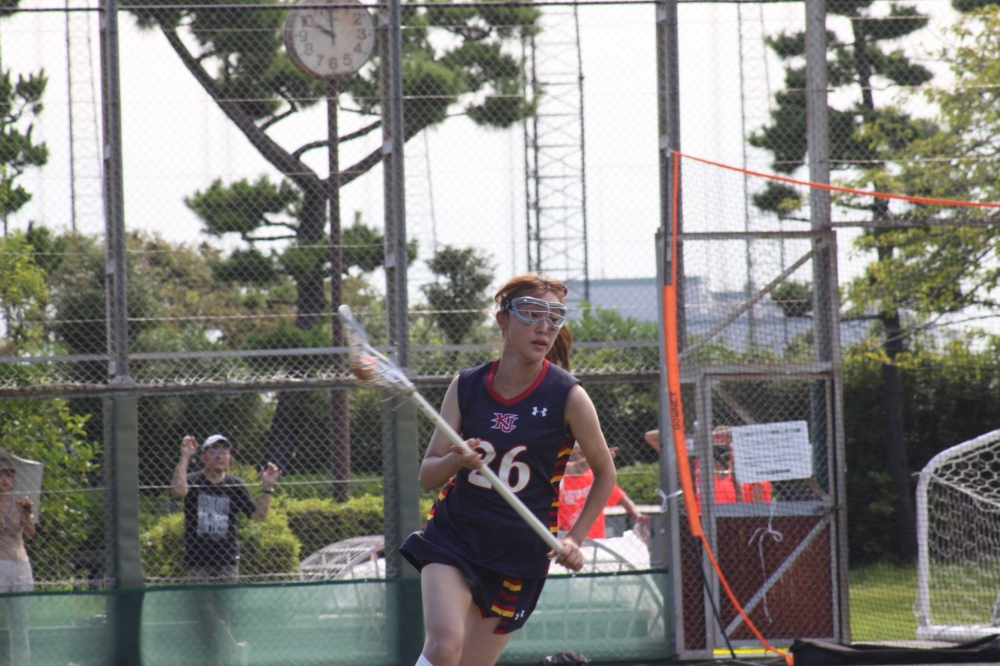
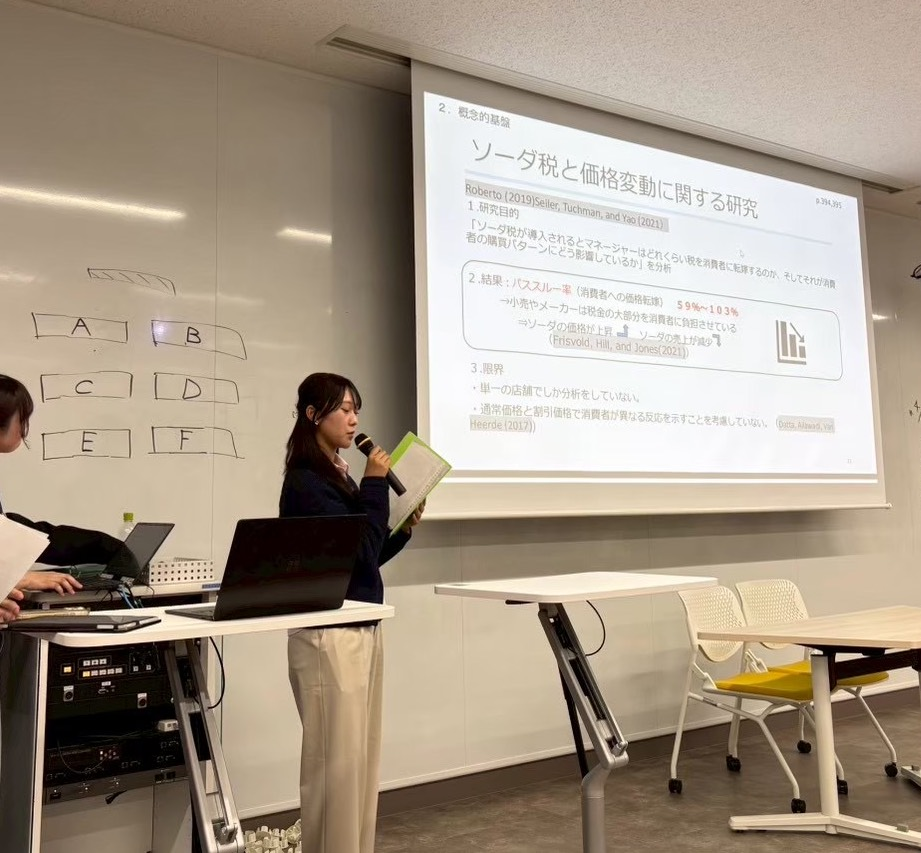
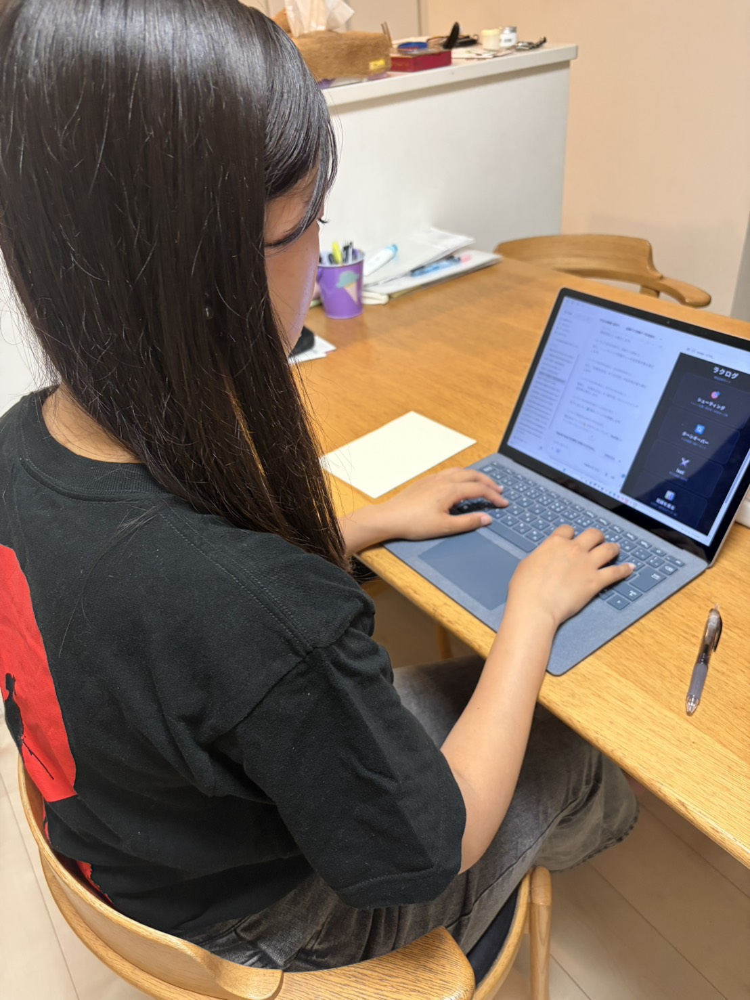
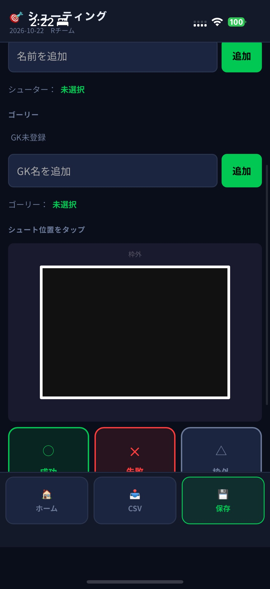

自己紹介ポートフォリオ
慶應義塾大学 体育会ラクロス部スタッフ。
選手時代の膝の怪我を転機に、山本勲研究会（計量経済学・因果推論）でのデータ分析と、
練習記録サイト「ラクログ」の企画・開発を実践。
客観的根拠をもとにPDCAを回し、周囲を巻き込んで組織の成果を最大化することに情熱を注いでいます。
私について
客観的データに基づく判断力と、人を巻き込む情熱を大切にしています。
プロフィール概要
活動フォトスナップ
写真をクリックすると拡大してご覧いただけます。




1週間のスケジュールと時間管理
朝5:30起きの部活動からゼミ・サイト開発・アルバイトまで。
目標を確実に達成するための徹底したPDCAと自己管理ルーティンです。
人生グラフ（モチベーション曲線）
最大の壁であった「膝の怪我」をどう捉え直し、強みへと昇華させたか。
グラフ上の各ポイントにホバーすると、当時のエピソードと得られた学びが表示されます。
💡 グラフの各ポイントをクリックまたはホバーすると、該当時期の詳細エピソードと学びが表示されます。
ラクログ × 計量経済 × 部活DX ✦
紙記録の全廃、AIデータ分析による選手起用支援など、チームを勝たせる新しいマネジメントを確立。
困難な経験すべてが、唯一無二の強みと貢献につながっている
慶應義塾大学 合格
「現状維持よりも挑戦」を選び、高い目標を掲げて受験勉強を完遂。計画を細分化してやり切る成功体験となりました。
半月板損傷の手術（最大の壁）
選手として懸命に取り組んでいた中で膝を負傷。手術と10ヶ月に及ぶリハビリを経験し、選手復帰の道を断念せざるを得ない苦境に直面。
簿記2級＆難関ゼミ合格
リハビリ期間を好機と捉え、簿記2級の短期集中取得と山本勲研究会（計量経済学）の選考に挑戦。客観的データ分析への関心が確立。
スタッフ転向＆ラクログ開発
部活動のDXを牽引するスタッフへ転向。紙の記録を廃止し、練習データ記録サイト「ラクログ」を企画・開発。データで勝てるチーム作りを実践。
実績と強み
どのような環境でも「どうすれば現状を良くできるか」を自ら考え、行動に移してきました。
日商簿記 2級
問題集2冊をそれぞれ3周解き込み、2.5ヶ月で一発合格。幼少期からの数字への親しみを論理的な会計知識へと昇華させ、目標達成に向けた高い集中力を発揮しました。
プログラミング ＆ サイト開発
怪我を契機に「練習現場の記録やデータを可視化したい」と決意。エンジニアと連携し、AIツールも駆使しながら練習記録サイト「ラクログ」の開発を推進。さらに、コーチのお手本動画を体系化して部員へ共有する「戦術共有Webサイト」も自ら構築・運用しています。
計量経済学・因果推論
山本勲研究会に所属。回帰分析や因果推論の手法を専門的に学び、感覚や勘に依存しない客観的エビデンス（ファクト）に基づく意思決定プロセスを実践しています。
リーダーシップ ＆ 周囲の巻き込み
ラクロス部学年幹部に2度選出。軽音部リーダーや中学・高校の学級委員も歴任。相手の立場を尊重しながら明確な役割分担を行い、全員が主体性を持って動ける組織を作ります。
PDCA思考 ＆ 徹底した振り返り
行きの電車でその日の目標を定め、練習で実践し、帰りの電車で即座に振り返り、夜に映像分析を実施。勝敗の明確な環境で、仮説検証のサイクルを高速で回し続けます。
組織改善・部活動のDX推進
スタッフ就任後、チームの運営課題を80項目洗い出し。紙での記録作業をデジタル化し、蓄積された練習・試合データからAI分析を行って選手起用の客観的提案を実施しています。
相手に寄り添う対話力・接客力
焼肉店でのアルバイトでは店舗オリジナルビールの売上1位を記録。個別指導塾では代理担当した生徒から指名を受けるなど、相手のニーズを汲み取り信頼関係を築く対話が得意です。
ラクログ LacLog
日々の練習と個人の成長をデータで見える化する。
ラクロス練習記録データサイト。
課題認識と開発の背景
選手からスタッフへ転向した際、従来の「紙による記録管理」と「データの属人化」に大きな課題を感じました。
選手一人ひとりのシュート決定率や1on1データをデジタル蓄積・可視化することで、客観的な振り返りと成長の加速を支援しています。
※ コーチのお手本動画を体系化して部内共有する「戦術共有Webサイト」は、戦術理解のための別プロジェクトとして別途自作・運用しています。
「ラクログ」練習記録画面イメージ（開発中）